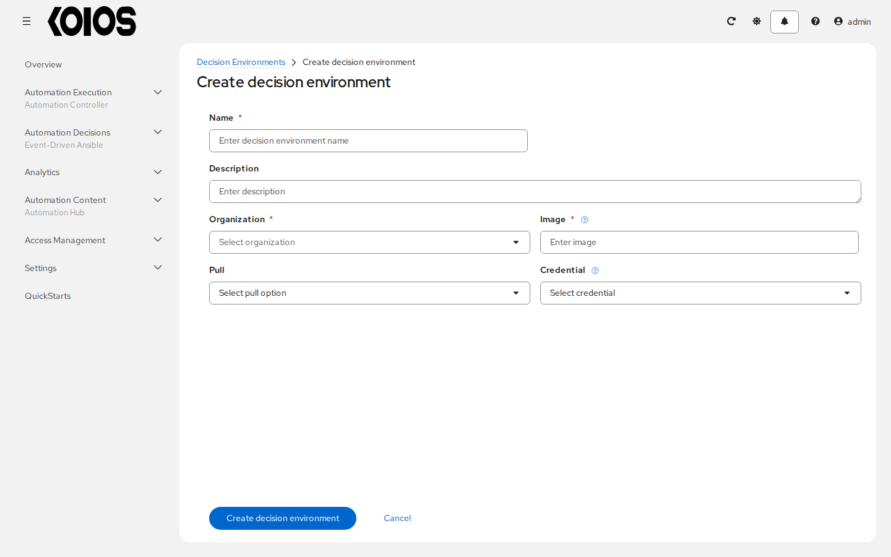
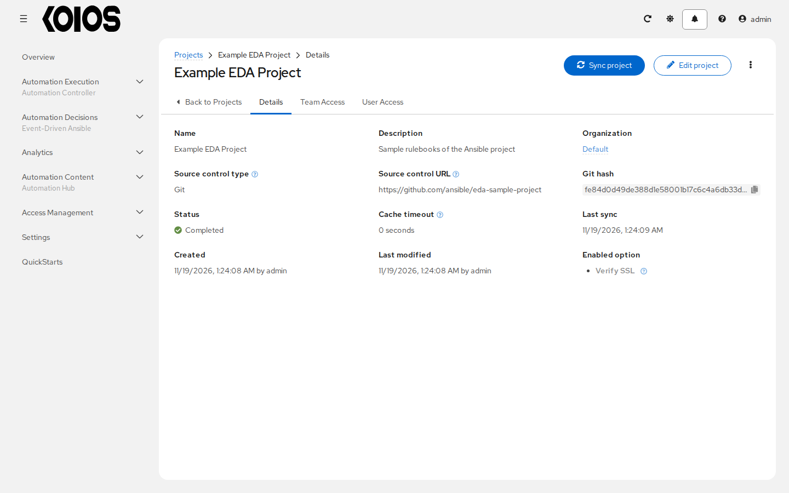
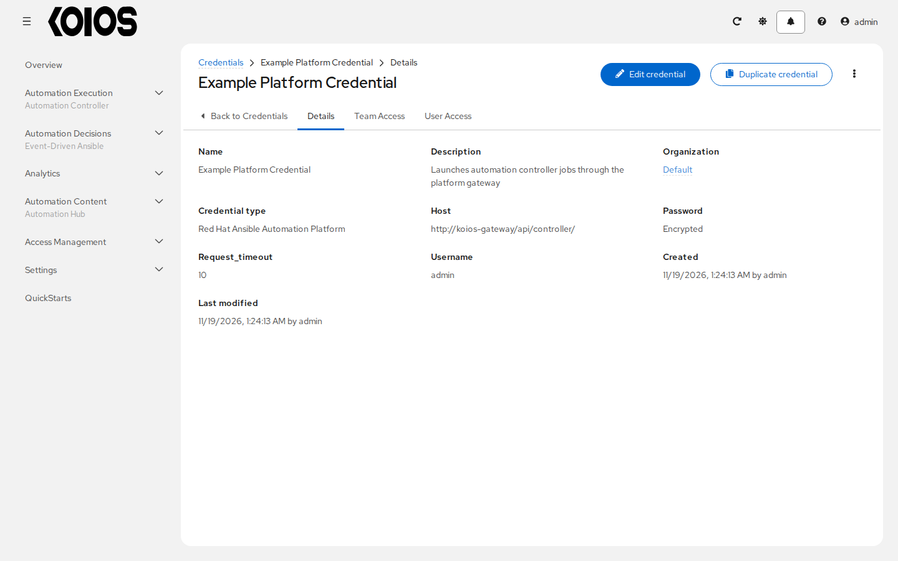
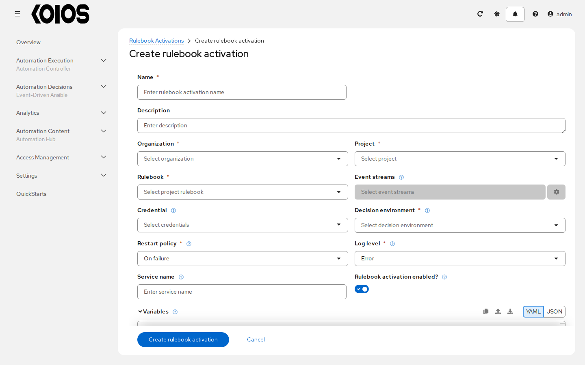
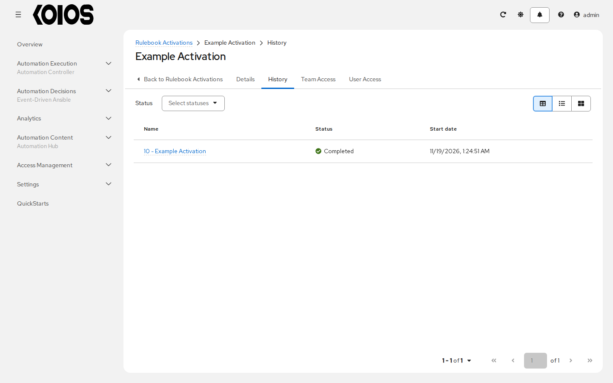
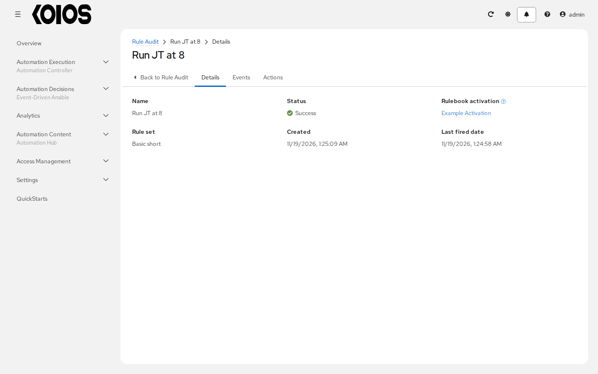
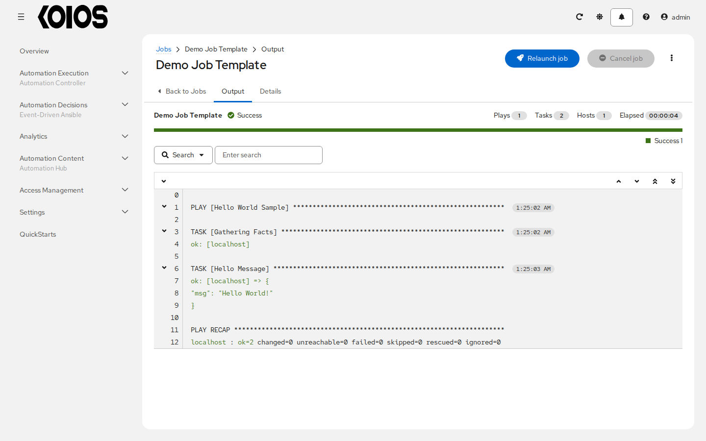

Your first rulebook activation
Run a short rulebook that generates events, launches Demo Job Template when event 8 arrives, and then completes. This tutorial connects Automation Decisions to Automation Execution through the platform gateway.
The project import, completed activation and successful controller job in this workflow were validated on the Koios test platform on 2026-11-18. Network access, certificate trust and permissions must still be configured for your own deployment.
Before you start
Complete First login and use an account with permission to create Event-Driven Ansible resources in Default.
Confirm that Demo Job Template exists and can run successfully, as described in the controller Quick Start. Its inventory and project must be ready.
Have a platform user or token permitted to launch that template. A dedicated account is preferable to reusing an administrator’s credentials.
Ensure the platform can import the sample Git repository, pull its decision environment and run activation pods. The decision environment must reach and trust the platform’s HTTPS address.
Obtain registry access for the private release image. A decision environment is separate from the execution environment used by the controller job.
The names below match the example data used for the documentation. If those resources already exist, inspect their configuration or choose distinct names instead of creating duplicates.
1. Create the decision environment
Open Automation Decisions > Decision Environments and click Create decision environment.
Field |
Value |
|---|---|
Name |
|
Organization |
Default |
Image |
|
Pull |
Only pull the image if not present before running. ( |
Credential |
Leave empty when the activation pods’ ServiceAccount already has the release registry pull secret; otherwise select the appropriate Container Registry credential. |
Replace <digest> with the complete de digest from the release manifest supplied with your
release. The Releases page identifies the current release and image;
an abbreviated digest containing … cannot be used as an image reference.
Click Create decision environment. A saved resource does not prove the image can be pulled; that is checked when an activation starts.

2. Import the sample project
Open Automation Decisions > Projects and click Create project.
Field |
Value |
|---|---|
Name |
|
Organization |
Default |
Source control type |
Git |
Source control URL |
|
Source control credential |
Leave empty for this public repository. |
Keep Verify SSL enabled and click Create project. Wait for Status to become Completed. If an existing project needs refreshing, use Sync project and wait for the import to complete. A failed import must be fixed before selecting a rulebook.
The tutorial uses extensions/eda/rulebooks/basic_short.yml, listed as basic_short.yml when
selecting a rulebook. The sample repository can change: record the project’s Git hash if you
need to reproduce a particular import.

What the rulebook does
The sample used for this walkthrough generates ten events with a delay of 0.5 seconds between
them. Run JT at 8 matches event.i == 8; the action uses override_run_basic when supplied,
or falls back to run_basic.
---
- name: Basic short
hosts: all
sources:
- ansible.eda.range:
limit: 10
delay: 0.5
rules:
- name: Run JT at 8
condition: event.i == 8
actions:
- run_job_template:
organization: Default
name: "{{ override_run_basic | default('run_basic') }}"
job_args:
extra_vars:
fake_execution_time: "5"
- debug:
msg: "Basic short rulebook, event {{ event.i }}"
The fake_execution_time variable is passed to the controller job. It does not set the lifetime of
the activation or require the demo playbook to use it. Do not change the imported project for this
tutorial; set the template override on the activation.
3. Create the platform credential
Open Automation Decisions > Infrastructure > Credentials and click Create credential.
Field |
Value |
|---|---|
Name |
|
Organization |
Default |
Credential type |
Red Hat Ansible Automation Platform |
Red Hat Ansible Automation Platform |
|
Username and Password |
Your platform account with permission to launch Demo Job Template; alternatively use OAuth Token and leave username/password empty. |
Verify SSL |
Enabled. The decision environment must trust the issuer of the HTTPS certificate. |
The credential type’s label is the one shown by the UI; the host here is the controller of this
Koios Automation Platform deployment. Include /api/controller/, not /api/controller/v2/.
The run_job_template action adds the API version and endpoint.
Click Create credential. If your platform uses a private CA, see certificate trust before starting.

The example data of the test platform uses the in-cluster address of the gateway; use the HTTPS address of your platform as described above.
4. Create and run the activation
Open Automation Decisions > Rulebook Activations and click Create rulebook activation.
Field |
Value |
|---|---|
Name |
|
Organization |
Default |
Project |
Example EDA Project |
Rulebook |
basic_short.yml ( |
Event streams |
Leave empty: this example uses the rulebook’s range source. |
Credential |
Example Platform Credential |
Decision environment |
Example Decision Environment |
Restart policy |
Never |
Rulebook activation enabled? |
On |
In Variables, enter:
override_run_basic: Demo Job Template
Leave Skip audit events unchecked so that you can inspect Rule Audit. Click Create rulebook activation. The finite source produces its events and exits; with Never, the activation should reach Completed rather than restart and launch the job repeatedly.

5. Verify the result
Open Example Activation. Confirm Completed. On History, open its instance to inspect the status and output. A short activation may finish before you observe Running.
Open Automation Decisions > Rule Audit and locate Run JT at 8 for this activation. Open the entry and inspect Details, Events and Actions. The triggering event has
i: 8.Open Automation Execution > Jobs, find the new Demo Job Template job and confirm Successful. Check its start time and output so that you do not mistake an older demo run for the job created by this activation.
Check both the rule action and the controller job. Completed describes the activation process; it is not by itself proof that every action or downstream job succeeded.



For failures, see Troubleshooting. To receive HTTP events without exposing an activation’s listener port, continue with Receive events with event streams.